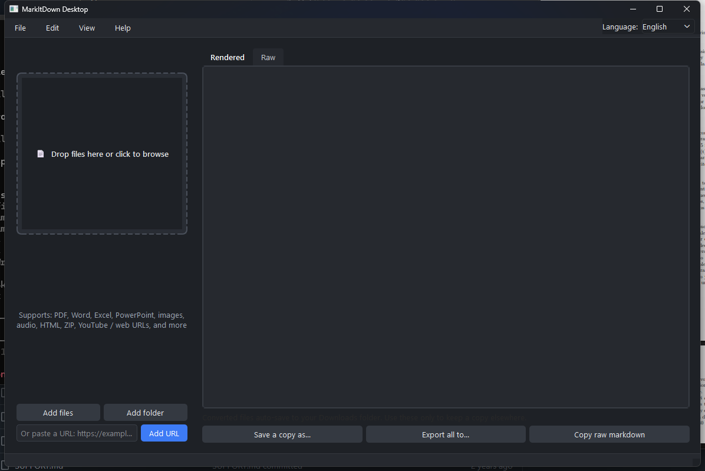

Drop a file. Get Markdown. Done.
A free, open-source desktop app for Microsoft's markitdown.
Drag any file or paste a URL — it converts and saves straight to your
Downloads folder. No manual export step, no CLI required.


Why this exists
markitdown is a great converter, but it's a command-line tool. This wraps the same engine in an interface anyone can use.
Auto-saves to Downloads — always
The moment a file finishes converting, the .md lands in your Downloads folder under its original name. Name collisions get a safe numeric suffix instead of overwriting anything. No export dialog to remember.
Drop and done
Drag, click to browse, or paste a URL — conversion starts immediately.
Live preview
Rendered or raw Markdown, editable before saving a copy elsewhere.
Light & dark themes
Follows your system automatically, or switch manually.
English & Spanish
Switch live from the menu bar — no restart needed.
Advanced options, out of the way
Plugins, Azure Document Intelligence, and format hints live in a separate settings dialog.
How it works
Drop a file
Or click the drop zone to browse, or paste a URL.
It converts
Runs in the background — the UI never freezes, even on large batches.
Find it in Downloads
The .md file is already there. Double-click the row to open its folder.
Supported formats
Anything markitdown supports:
Install & run
Requires Python 3.10+. No packaged installer yet — clone and run.
git clone https://github.com/andrest04/markitdown-desktop.git cd markitdown-desktop python -m pip install -r requirements.txt run.bat
git clone https://github.com/andrest04/markitdown-desktop.git cd markitdown-desktop python3 -m pip install -r requirements.txt ./run.sh